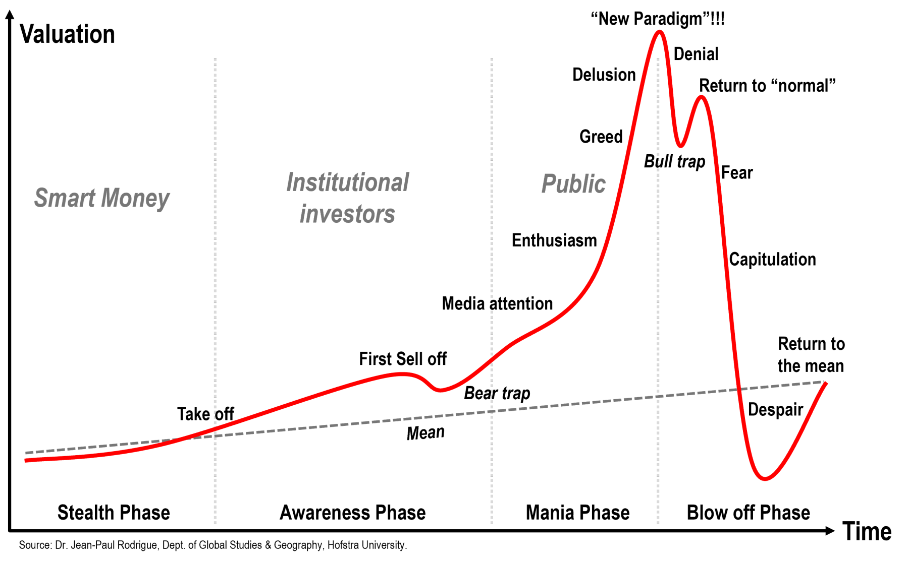

"Nagła nowość" to efekt skali i popularyzacji, nie samego wynalazku
Krótka Historia ChatGPT
2018 - GPT
2019 - GPT-2
2020 - GPT-3: skok jakości dzięki skali
2022 - ChatGPT: model dialogowy dla każdego
2023 - GPT-4
2024 - GPT-4o
2025+ - GPT-5.x

AI obecnie rozwija się w rytmie typowych baniek - wpływa to na regulacje, nastroje rynkowe i presję wdrażania.
1999–2000: Dot com
2017–2018: Blockchain
2020–2021: NFT/Metaverse
2021–2023: "Everything-as-a-Service"
Sztuczna "Inteligencja"?
Model:
nie rozumie treści - operuje na statystycznych zależnościach między tokenami
nie weryfikuje faktów - generuje zdania zgodne ze wzorcami z danych
nie przechowuje dokumentów
Model przechowuje wagi sieci: miliardy liczb opisujących statystyczne zależności między tokenami
The plaintiff's lawyers used ChatGPT to generate a legal motion, which contained numerous fake legal
cases involving fictitious airlines with fabricated quotations and internal citations.
Retrieval: wyszukiwanie najbardziej pasujących fragmentów z bazy wiedzy
Augmentation: dołączenie tych fragmentów do promptu
Generation: model generuje odpowiedź na bazie dostarczonych treści
Model nie uczy się dokumentów z RAG
Łatwo odtworzyć jakie treści trafiły do promptu
"Sztuczna" Inteligencja?
In 2016, Bloomberg highlighted the plight of the humans spending 12 hours a day
pretending to be chatbots for calendar scheduling services such as X.ai and Clara.
The job was so mind-numbing that human employees said they were looking forward
to being replaced by bots.
An accidental leak revealed that Flock, which has cameras in thousands of US communities, is using
workers in the Philippines to review and classify footage.